Physical Design¶
Learning Goals
- Understand how tables are stored in files
- Understand basic indexing techniques
- Use knowledge of file/index to tune basic SQL queries
File Organization¶
Storage Hierarchy¶
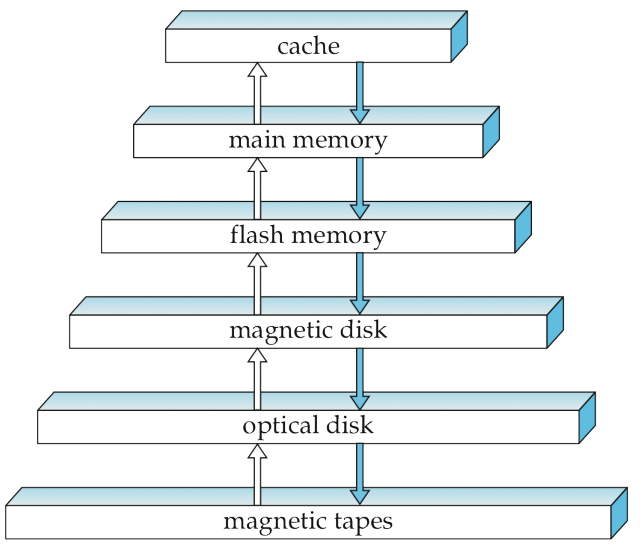
- Volatile storage (cache, main memory): loses content when power is switched of
- Non-volatile storage: content persists even when power is switched of
- The higher the level, the faster the access
Magnetic Hard Disk¶
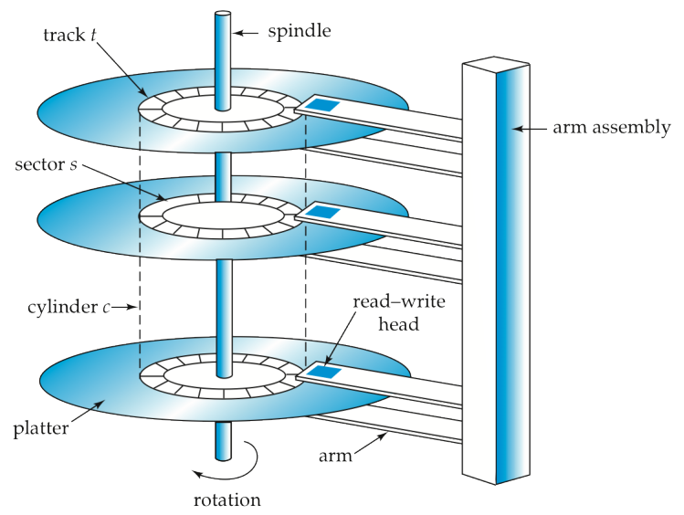
For each disk access
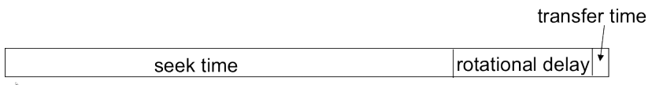
- Each track is divided into sectors (smallest unit of data that can be read/written)
- A block (page) is a contiguous sequence of sectors from a single track
- Basic unit of data transfer between disk and memory
Optimization of disk block access
- Organize blocks in the way data is accessed
- Store related information close to each other
Conceptually, relational data is stored as sequences of bits on disk.
Functional requirements
- Processing records sequentially
- Efficient key-value search
- Insertion/deletion of records
Performance objectives
- Little wasted space
- Fast response time
- High number of transactions
Files¶
Storing databases on disks
- The database is stored as a collection of files
- Each file corresponds to a set of records
- A record contains a number of fields
Multiple records are “grouped” into blocks (pages)
Record size
- Fixed
- Variable
Files reside on mass storage (usually a disk)
- Fast random access
- Non-volatile storage
Example¶
Blocks in a file system are not necessarily contiguous
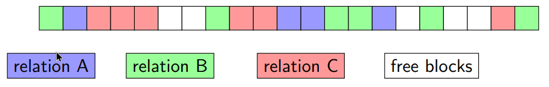
Speed
- Speed of reading a block (an I/O):
- \sim 10 msec to a non-contiguous block read
- \sim 1 msec for a contiguous block read
- DBMS/OS can reorganize blocks to make them contiguous
Fixed Size Records¶
All records use the same length if they occupy the whole space or not
Read record i
- Get record at location: \mathrm{recordSize \times i}
Delete record i
-
Move records i+1,\dots,n to location i,\dots,n-1 to close the gap
or
-
Move record n to i
or
-
Mark the gaps and fill them with future insertions
- Mark first gap in the file header
- Use the gaps to point to other gaps (free-list)
Variable Size Records¶
Records have different lengths and occupy different amounts of disk space
Use case: variable-lengths attributes (e.g., varchar)
Implementation alternatives
- If max. size is known:
- Map variable size records to fixed size records
- Slotted-page-structure
- Records stored contiguously
- Block header contains pointers to records
- 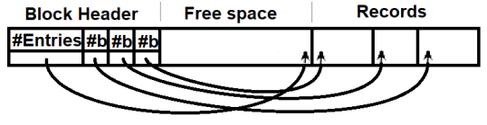
Organizing Records in a File¶
Determine the order of records within a file
Heap file organization
- A record can be placed anywhere in the file
Sequential file organization
- Records stored in sequential order by the value of the search key
Hash file organization
- Hash the record to a block based on a hash function and a hash key
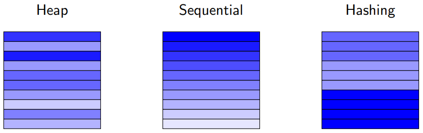
Heap¶
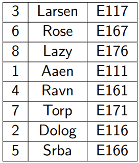
- No apparent ordering on any of the columns in the table
- Search: linear scan always works
- Insert: find a free slot
Sequential¶
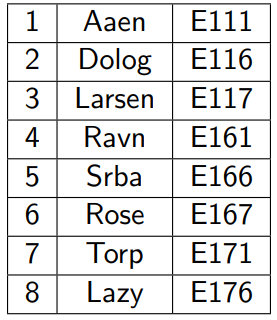
- Example table is stored in order of the ID column
- The ordering column does not need to be the primary key
- Search: binary search when search on the ID column
- Insert: reorganization of the file
Hashing¶
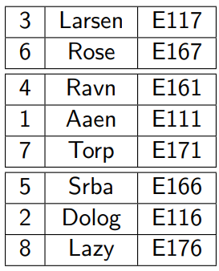
- Hash function used in this example is: mod(ID, 3)
- Search: use the hash function on the search key value (ID) to find the right block
- Insert: use the hash function on the search key value (ID) to find the right block and append
Indexes¶
Assumptions
- Many rows are stored in the database
- Many queries only access a small fraction of the rows
- Must be able to modify the rows, i.e., insert, update, and delete
- Cannot take the database offline to reorganize the files used in the database
Goal: access as little data as possible
Overview¶
Classification
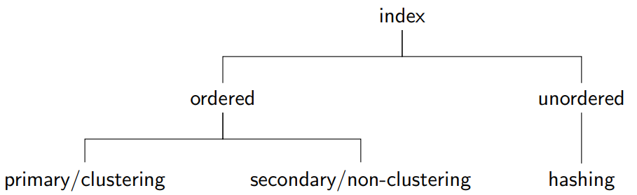
Variations
- Single-level index
- Multi-level index
It is possible to have multiple indexes for the same relation.
Primary Sparse Index¶
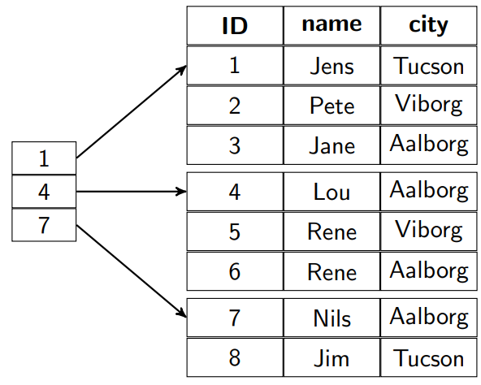
- Defined on a file ordered on the search key
- One index entry for each block in the file
Secondary Dense Index¶
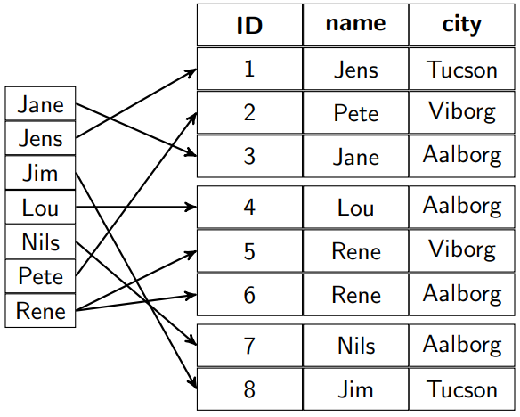
- Defined on a file not ordered on the search key
- One index entry for each record
Overview¶
Primary vs. secondary
- = clustering vs. non-clustering
- Is the file ordered on the search key?
Dense vs. sparse
- A separate index entry for each record (unique search key value)?
- Yes → dense
- No → sparse
Tradeoff
- Dense indexes: faster location of records
- Sparse indexes: smaller indexes
Multi-level Index¶
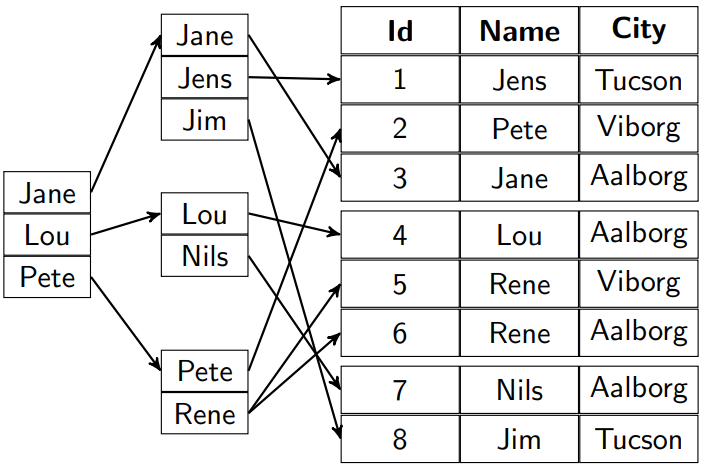
- Goal: the outer index (sparse) fits into main memory
- The number of levels can be greater than two
Limitations of index-sequential file organization
- Insertions and deletions
- Expensive reorganization of multiple levels of ordered files
B^+^-trees
- Balanced search trees Number of lookups/levels is the same for all entries
- Leaving some space in each disk block
Index Concepts Combined¶
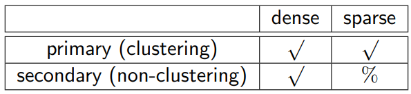
A secondary sparse index does not make sense!
- Since records are not sorted on that key, we cannot predict the location of a record from the location of any other record
- Thus, secondary indexes are always dense.
Clustering Dense
- Index entry has a pointer to the first record
Non-clustering Dense
- Index entry has pointers to all the records
B+-Tree¶
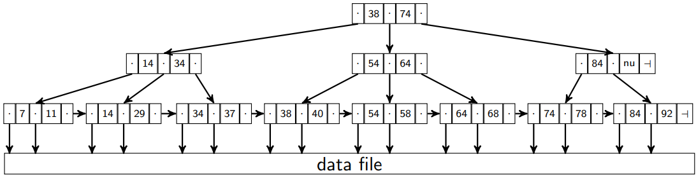
- n = the fanout = the number of pointers = 3 in the example above
- \dashv = unused pointer
- nu = Unused search key value
- Leaf-level pointers: point to the data file
- Search: Both key lookups and range queries are well supported
Node Structure¶
Node structure used for root, internal, and leaf nodes
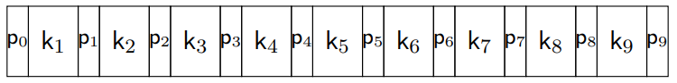
In this example, the fanout n is 10
- In each node: 10 (n) pointers (p_i)
- In each node: 9 (n-1) search key values (k_j)
The last pointer in leaf nodes is used to chain together the leaf nodes in search key order
Properties¶
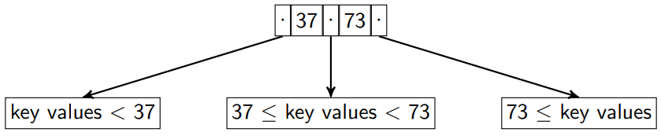
Balanced
- All paths from the root node to leaf nodes have the same length
Bushy
- Each node has between \lceil {n \over 2} \rceil and n children
- Exception: the root node has between 2 and n children
- Leaf nodes have between $\lceil {n-1\over2} \rceil $ and n - 1 pointers to file records and 1 pointer to the next leaf node
Ordered
- The key values are sorted in each node, i.e, k_i < k_j, if i < j
- The subtrees are ordered
Minimal B+-Tree Example¶
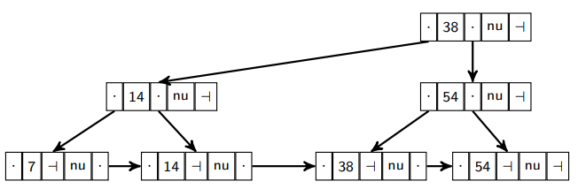
- A minimally filled B+-tree for n=3
B+-Tree in Practice¶
- Each B+-tree node has the size of one I/O block of data.
- A B+-tree node is at least 50% filled (by design)
- The B+-tree contains a rather small number of levels, usually logarithmic in the size of the main file
- The first one or two levels of the tree are stored in main memory
- “Logically” close does not imply “physically close” Typically reading a node in a B+-tree requires one random I/O
- The non-leaf nodes are a hierarchy of sparse indexes
When a primary key constraint for a table is created in a DBMS, then the uniqueness is checked by using a B+-tree.
B+-Tree Updates¶
Insertions
- Overflow, split
- The tree height may be increased by 1
Deletions
- Underflow, borrow, coalesce
- The tree height may be decreased by 1
Multiple examples in DBS7 Slide 30- p. 54-
B+-Trees Online¶
Interactive apps available on the Web
https://goneill.co.nz/btree-demo.php
https://www.cs.usfca.edu/~galles/visualization/BPlusTree.html
third party material, not fully tested, might have a slightly different implementation (and errors)
Unordered Indexes (Hashing)¶
Static Hash Index¶
Build an index based on a hash function (instead of based on a search key order)
- Choose an appropriate hash function h
- Apply hash function h to search key value k to compute h(k)
- Bucket (disk block) for each value of h(k)
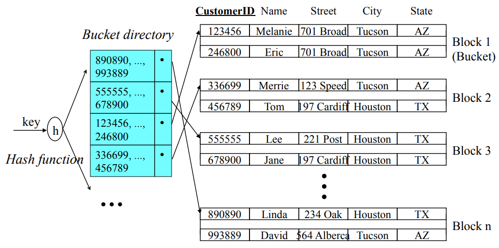
- Lookup
- One access to the bucket directory
- One access to the data file
- Good performance depends on a good hash function
- Bucket overflow
- Too many different key values hash to the same bucket
- Solution: overflow buckets and overflow chains
- 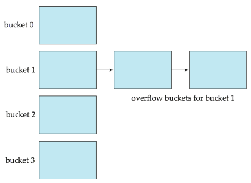
Open vs Closed Hashing¶
Open Hashing
- Overflow chains
Closed Hashing
- Fixed number of buckets
- Overflow: use one of the other buckets (linear probing, further hash functions, etc.)
Static Hashing¶
Problem for static hashing:
- Hash function and number of buckets determined during initialization
Databases grow or shrink over time!
-
Initial number of buckets too small
\to many overflows, performance degrades
-
Initial number of buckets too big
\to underflow, space is wasted
Solutions
- Periodic re-organization
- Dynamic hashing:
- allows modifications dynamically
Physical Design Tuning¶
Design decisions
- Ordered/clustering indexes vs. hashing
- Sparse vs. dense index
- Clustering vs. non-clustering indexes
- Joins and indexes
Tuning questions
- Are the costs of periodic reorganization acceptable?
- How frequent are insertions and deletions?
- Optimization goal: average access time or worst-case access time?
- What types of queries are expected?
Use of Indexes¶
Sometimes available indexes are not used, why?
- Catalog out of date optimizer may think table is small
- “Good” and “bad” query examples
SELECT * FROM EMP WHERE salary/12 > 4000- Operations on conditions may prevent the optimizer from realizing the index could be useful
SELECT * FROM EMP WHERE salary > 48000- Good
SELECT * FROM EMP WHERE SUBSTR(name, 1, 1) = ’G’- Functions on conditions require function-based indexes
SELECT * FROM EMP WHERE name LIKE ’G%’- Good
SELECT * FROM EMP WHERE name = ’Smith’- Good
SELECT * FROM EMP WHERE salary IS NULL- Requires an index on nullable values
- Nested sub-query
- Selection by negation
- Queries with
OR